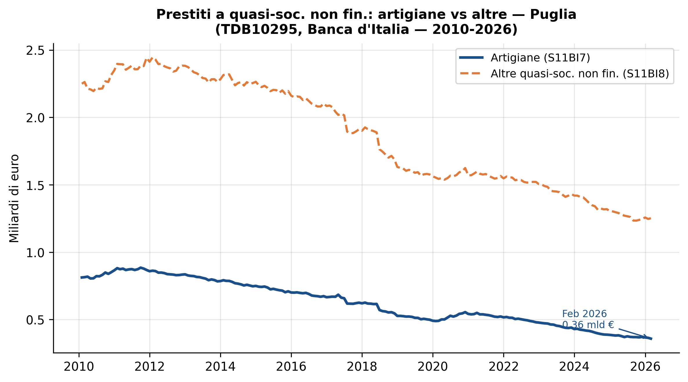
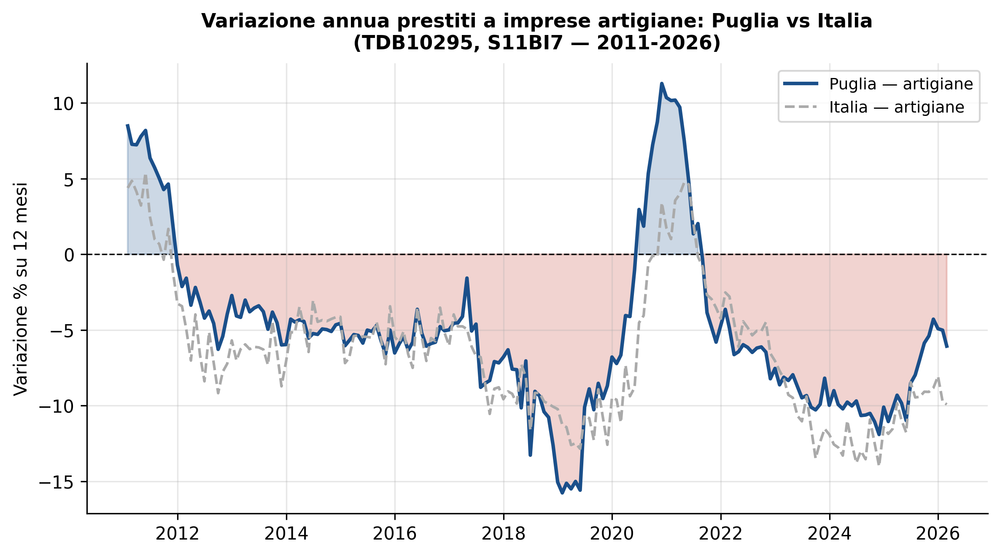
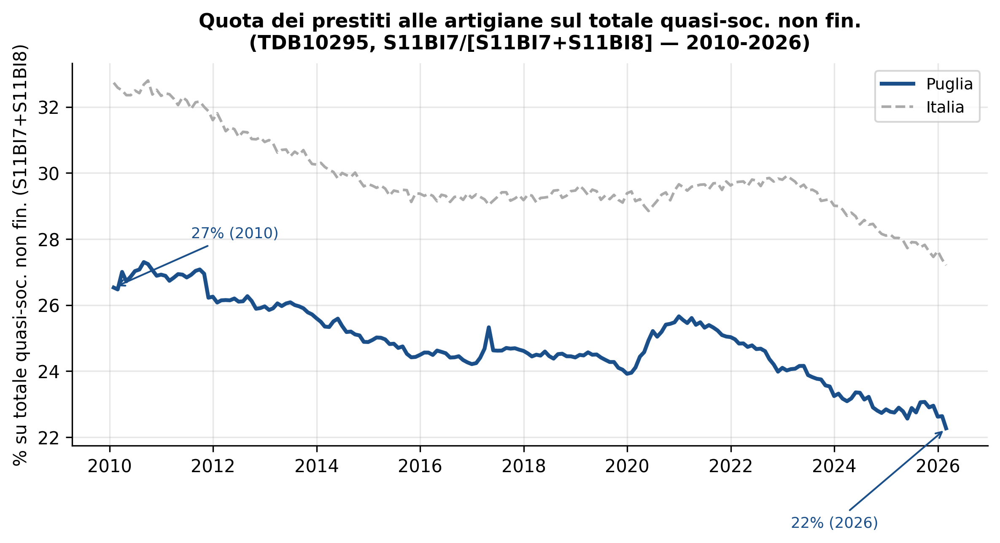
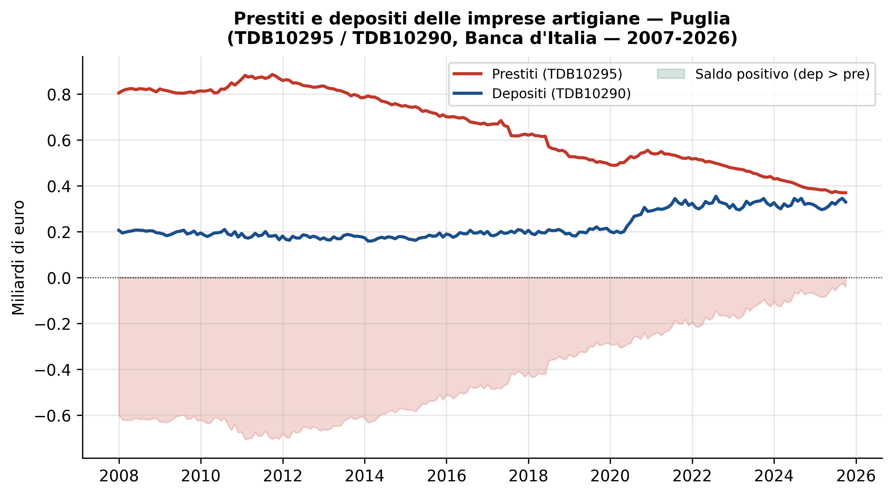
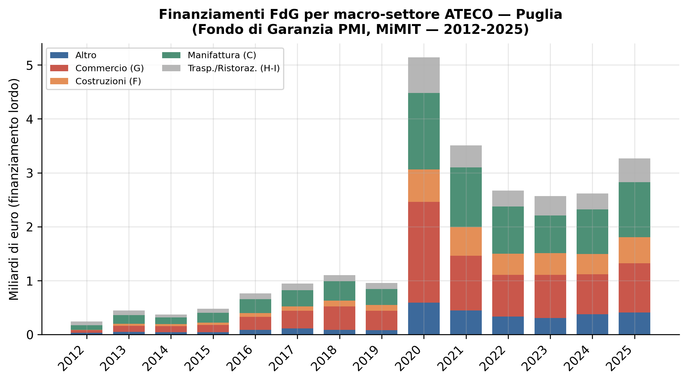

Figura 1: Stock di prestiti alle quasi-società non finanziarie: artigiane (S11BI7, linea blu) vs altre (S11BI8, linea arancione). Unità: miliardi di euro. Fonte: Banca d’Italia, TDB10295. Elaborazione propria.
Analisi quantitativa su dati Banca d’Italia e Fondo di Garanzia PMI
Paolo Volterra ![]()
artigiani, Puglia, credito, Bankit, FdG
Il presente documento analizza l’evoluzione del credito bancario alle imprese artigiane pugliesi nel periodo 2007-2026, utilizzando come fonte primaria la serie TDB10295 S11BI7 di Banca d’Italia (Quasi-società non finanziarie artigiane, aggiornata a febbraio 2026) e, come fonte secondaria, i microdati del Fondo di Garanzia PMI.
I principali fatti osservabili sono i seguenti. Lo stock di prestiti alle imprese artigiane in Puglia ha raggiunto il picco nel 2011-09 a circa 0.89 miliardi di euro e si attesta a febbraio 2026 a 0.36 miliardi, con una contrazione cumulata di circa -59%. La flessione è più pronunciata di quella registrata per le quasi-società non artigiane nello stesso periodo (-49%). La Puglia pesa per circa il 3.4% del totale nazionale dei prestiti alle artigiane, quota inferiore al peso demografico ed economico della regione. La variazione annua più recente è pari a -6.1% per la Puglia e -9.9% per l’Italia, con la regione che registra una contrazione meno intensa rispetto alla media nazionale.
L’analisi evidenzia tre fragilità strutturali: l’erosione più rapida del credito artigiano rispetto alle altre categorie di imprese, la persistente sotto-rappresentazione della Puglia nel credito artigiano nazionale, e la dipendenza quasi totale dal credito bancario (saldo depositi-prestiti prossimo allo zero) che lascia le artigiane pugliesi senza cuscinetto di liquidità.
L’artigianato costituisce una componente rilevante del tessuto produttivo pugliese: la Puglia conta circa 75.000 imprese artigiane iscritte agli albi (fonte: Unioncamere), pari a circa il 30% delle imprese manifatturiere e dei servizi alla persona. Si tratta prevalentemente di micro-imprese a conduzione familiare attive in costruzioni, trasformazione alimentare, abbigliamento, lavorazione del legno e dei metalli, riparazione e servizi alla persona.
La classificazione Banca d’Italia utilizza il codice S11BI7 per le “quasi-società non finanziarie artigiane”, ovvero le imprese artigiane con contabilità separata ma prive di personalità giuridica (ditte individuali artigiane e società di persone artigiane). Questa categoria non include i liberi professionisti né le società di capitali che svolgono attività artigianale, il che implica una sottostima sistematica rispetto all’universo dell’artigianato in senso lato.
Dichiarazione di assunzione. I dati TDB10295 S11BI7 misurano i prestiti (esclusi PCT) alle quasi-società non finanziarie artigiane aggregate a livello NUTS2. Non è possibile, con questa fonte, distinguere il credito per tipo di attività artigianale, per dimensione o per anzianità dell’impresa. Analogamente, la serie include le sofferenze nell’aggregato, il che introduce una fonte di eterogeneità nel confronto temporale qualora la composizione NPL/performing sia variata.
L’analisi si basa su tre componenti:
La prima è la serie TDB10295 S11BI7, che misura lo stock mensile di prestiti (esclusi PCT) alle quasi-società non finanziarie artigiane per provincia e regione, disponibile dal 2007. La serie copre sia la Puglia (codice NUTS2: ITF4) sia l’aggregato nazionale (IT), consentendo confronti longitudinali e geografici.
La seconda è la serie TDB10290 S11BI7, che misura i depositi bancari delle stesse imprese artigiane. Il raffronto tra prestiti e depositi permette di stimare la posizione netta delle artigiane verso il sistema bancario, proxy del loro grado di dipendenza finanziaria dal credito esterno.
La terza è il dataset Fondo di Garanzia PMI (MiMIT, microdati parquet), utilizzato per ricostruire il sostegno pubblico al credito per i settori manifatturiero (ATECO C) e delle costruzioni (ATECO F), che rappresentano i due settori a maggiore intensità artigianale nel portafoglio del Fondo.

Figura 1: Stock di prestiti alle quasi-società non finanziarie: artigiane (S11BI7, linea blu) vs altre (S11BI8, linea arancione). Unità: miliardi di euro. Fonte: Banca d’Italia, TDB10295. Elaborazione propria.
| Mese | Artigiane — mln € | Non artigiane — mln € | Quota artig. (%) |
|---|---|---|---|
| 2025-03 | 383 | 1290 | 22.9 |
| 2025-04 | 377 | 1279 | 22.8 |
| 2025-05 | 370 | 1271 | 22.5 |
| 2025-06 | 376 | 1266 | 22.9 |
| 2025-07 | 371 | 1261 | 22.7 |
| 2025-08 | 370 | 1235 | 23.1 |
| 2025-09 | 370 | 1234 | 23.1 |
| 2025-10 | 368 | 1240 | 22.9 |
| 2025-11 | 372 | 1247 | 23.0 |
| 2025-12 | 368 | 1257 | 22.6 |
| 2026-01 | 365 | 1246 | 22.7 |
| 2026-02 | 359 | 1252 | 22.3 |
Tabella 1: Stock di prestiti alle quasi-soc. non fin. artigiane (S11BI7) e altre (S11BI8) in Puglia — ultimi 12 mesi. Unità: milioni di euro. Fonte: Banca d’Italia, TDB10295.
Fatto. Lo stock di prestiti alle imprese artigiane in Puglia ha raggiunto il picco nel 2011-09 a 885 milioni di euro, ed è sceso a 359 milioni a febbraio 2026, registrando una contrazione cumulata di circa -59%. Nello stesso periodo, le quasi-società non artigiane hanno subito una flessione di circa -49%, un calo meno pronunciato di circa 9 punti percentuali.
Interpretazione. La differenza nella traiettoria di contrazione tra artigiane e non-artigiane può riflettere tre meccanismi distinti: (a) le artigiane pugliesi, operando in settori più ciclici (costruzioni, lavorazioni) e con minore capacità collaterale, potrebbero aver subito un razionamento del credito più severo; (b) la riduzione dello stock può riflettere l’uscita dal mercato di imprese artigiane — dissoluzioni, conversioni in altre forme giuridiche — piuttosto che una riduzione della domanda di credito per impresa sopravvissuta; (c) le artigiane tendono a operare con volumi di debito unitario più bassi, rendendo lo stock più sensibile alle variazioni del numero di imprese attive.
Assunzione critica. La serie TDB10295 S11BI7 non consente di separare le variazioni di stock dovute a nuove erogazioni, rimborsi, write-off o reclassificazioni. Il confronto con S11BI8 è tra serie omogenee per metodologia ma disomogenee per struttura settoriale e dimensionale delle imprese sottostanti.

Figura 2: Variazione annua (su 12 mesi) dei prestiti alle imprese artigiane: Puglia (linea blu) vs Italia (linea grigia tratteggiata). Fonte: Banca d’Italia, TDB10295, S11BI7. Elaborazione propria.
| Mese | Puglia YoY (%) | Italia YoY (%) | Differenziale (pp) |
|---|---|---|---|
| 2025-03 | -9.3 | -9.8 | 0.5 |
| 2025-04 | -9.8 | -11.0 | 1.2 |
| 2025-05 | -11.0 | -11.8 | 0.8 |
| 2025-06 | -8.5 | -8.5 | 0.0 |
| 2025-07 | -8.0 | -9.5 | 1.5 |
| 2025-08 | -6.9 | -9.4 | 2.5 |
| 2025-09 | -5.9 | -9.1 | 3.2 |
| 2025-10 | -5.4 | -9.1 | 3.7 |
| 2025-11 | -4.3 | -8.8 | 4.5 |
| 2025-12 | -4.9 | -8.1 | 3.2 |
| 2026-01 | -5.0 | -9.7 | 4.7 |
| 2026-02 | -6.1 | -9.9 | 3.8 |
Tabella 2: Variazione annua (YoY su 12 mesi) dei prestiti alle imprese artigiane: Puglia e Italia — ultimi 12 mesi. Fonte: Banca d’Italia, TDB10295, S11BI7.
Fatto. La variazione annua dei prestiti alle artigiane pugliesi è rimasta in territorio negativo in modo quasi ininterrotto a partire dal 2012, con punte di contrazione superiori al 10% nel biennio 2017-2018. Dall’inizio del 2022 la dinamica si è allineata alla media nazionale, con entrambe le serie che mostrano contrazioni moderate. La variazione più recente è pari a -6.1% per la Puglia e -9.9% per l’Italia.
Interpretazione. L’allineamento recente tra Puglia e Italia nelle variazioni annue va letto con cautela. Non implica convergenza nei livelli assoluti di credito per unità produttiva, né riduzione delle asimmetrie strutturali. Un’analisi della convergenza richiederebbe la normalizzazione per numero di imprese artigiane attive, dato non disponibile in questa fonte.
Obiezione Risk Committee. La recente contrazione relativamente più contenuta della Puglia rispetto all’Italia (-6.1% vs -9.9%) potrebbe non riflettere maggiore resilienza, ma semplicemente un livello assoluto di stock già così basso da rendere difficile ulteriori contrazioni (effetto “pavimento”).

Figura 3: Quota dei prestiti alle artigiane sul totale quasi-soc. non fin. (S11BI7 / [S11BI7+S11BI8]): Puglia (linea blu) vs Italia (linea grigia). Fonte: Banca d’Italia, TDB10295. Elaborazione propria.
| Anno | Puglia (%) | Italia (%) | Diff. Puglia−Italia (pp) |
|---|---|---|---|
| 2010 | 26.9 | 32.3 | -5.4 |
| 2011 | 26.3 | 31.6 | -5.3 |
| 2012 | 26.0 | 30.9 | -4.9 |
| 2013 | 25.6 | 30.3 | -4.7 |
| 2014 | 24.9 | 29.7 | -4.8 |
| 2015 | 24.5 | 29.4 | -4.9 |
| 2016 | 24.2 | 29.2 | -5.0 |
| 2017 | 24.6 | 29.2 | -4.6 |
| 2018 | 24.4 | 29.5 | -5.1 |
| 2019 | 23.9 | 29.4 | -5.5 |
| 2020 | 25.7 | 29.7 | -4.0 |
| 2021 | 25.0 | 29.6 | -4.6 |
| 2022 | 24.1 | 29.8 | -5.7 |
| 2023 | 23.2 | 29.0 | -5.8 |
| 2024 | 22.8 | 28.1 | -5.3 |
| 2025 | 22.6 | 27.6 | -5.0 |
Tabella 3: Quota dei prestiti alle artigiane sul totale quasi-soc. non fin. (S11BI7/[S11BI7+S11BI8]) — valore di dicembre di ogni anno. Fonte: Banca d’Italia, TDB10295.
Fatto. La quota dei prestiti alle artigiane sul totale delle quasi-società non finanziarie è scesa in Puglia dal 27% del 2010 al 22% del febbraio 2026, con una riduzione di circa 5 punti percentuali. In Italia il calo è simile: dal 32% al 27%.
Interpretazione. La riduzione della quota riflette un declino strutturale del peso delle artigiane nel portafoglio creditizio bancario. Questo è coerente con: (i) la riduzione del numero di imprese artigiane attive in tutto il paese, un fenomeno documentato da Unioncamere; (ii) la maggiore contrazione dei prestiti unitari alle artigiane rispetto alle altre quasi-società, dovuta a processi di selezione del credito sfavorevoli per le imprese più piccole e meno patrimonializzate.
Convergenza Puglia-Italia. Il fatto che la Puglia mantenga una quota artigiane leggermente inferiore alla media nazionale (23% vs 28%) suggerisce che la struttura produttiva regionale, pur con un elevato numero di artigiani, non si traduce in una maggiore intensità creditizia delle artigiane rispetto al resto del paese. Un’ipotesi interpretativa è che le artigiane pugliesi siano più piccole in media e quindi meno capaci di accedere al credito formale.

Figura 4: Prestiti (TDB10295, linea rossa) e depositi (TDB10290, linea blu) delle imprese artigiane in Puglia. Il saldo (depositi − prestiti) è evidenziato in verde (saldo positivo) o rosso (saldo negativo). Fonte: Banca d’Italia. Elaborazione propria.
| Mese | Prestiti — mln € | Depositi — mln € | Saldo dep.−pre. — mln € |
|---|---|---|---|
| 2024-10 | 389 | 323 | -66 |
| 2024-11 | 388 | 321 | -67 |
| 2024-12 | 387 | 314 | -72 |
| 2025-01 | 384 | 304 | -80 |
| 2025-02 | 382 | 296 | -86 |
| 2025-03 | 383 | 301 | -82 |
| 2025-04 | 377 | 311 | -67 |
| 2025-05 | 370 | 328 | -43 |
| 2025-06 | 376 | 320 | -56 |
| 2025-07 | 371 | 336 | -36 |
| 2025-08 | 370 | 346 | -24 |
| 2025-09 | 370 | 330 | -40 |
Tabella 4: Prestiti, depositi e saldo netto delle imprese artigiane in Puglia — ultimi 12 mesi disponibili. Unità: milioni di euro. Fonte: Banca d’Italia, TDB10295 e TDB10290.
Fatto. Fino al 2013 circa, lo stock di prestiti alle artigiane pugliesi era significativamente superiore ai depositi, con uno sbilancio (prestiti - depositi) nell’ordine di 200-300 milioni di euro. Da quella data la convergenza si è fatta rapida: a 2025-09 il saldo è pari a circa -40 milioni di euro (depositi 330 mln, prestiti 370 mln).
Interpretazione. La convergenza tra prestiti e depositi può essere interpretata in due modi opposti. La prima lettura — ottimistica — è che le artigiane pugliesi abbiano ridotto la dipendenza dal debito bancario, accumulando liquidità e migliorando il proprio equilibrio finanziario. La seconda lettura — pessimistica — è che la riduzione dei prestiti sia stata forzata (credit rationing, uscita dal mercato) e che la quasi-parità attuale rifletta un sottoutilizzo del credito disponibile piuttosto che una scelta finanziaria consapevole.
Vulnerabilità metodologica. I dati TDB10295 includono le sofferenze nel numeratore dei prestiti, mentre TDB10290 misura solo i depositi performing. Il saldo depositi-prestiti non è quindi una misura pulita della posizione netta liquida, ma risente della componente NPL inclusa nello stock dei prestiti.

Figura 5: Finanziamenti deliberati dal FdG PMI in Puglia per macro-settore ATECO (classificazione a 2 digit). Unità: miliardi di euro. Fonte: Fondo di Garanzia PMI — MiMIT, elaborazione su microdati. I settori sono raggruppati per sezione ATECO.
| Anno | Altro | Commercio (G) | Costruzioni (F) | Manifattura (C) | Trasp./Ristoraz. (H-I) | Totale |
|---|---|---|---|---|---|---|
| 2019 | 83 | 360 | 107 | 293 | 115 | 959 |
| 2020 | 592 | 1,869 | 600 | 1,420 | 660 | 5,140 |
| 2021 | 447 | 1,017 | 532 | 1,104 | 410 | 3,509 |
| 2022 | 332 | 775 | 392 | 878 | 291 | 2,668 |
| 2023 | 307 | 800 | 403 | 700 | 359 | 2,569 |
| 2024 | 379 | 741 | 374 | 825 | 299 | 2,619 |
| 2025 | 410 | 912 | 483 | 1,021 | 438 | 3,264 |
Tabella 5: Finanziamenti FdG PMI per macro-settore ATECO in Puglia — ultimi 7 anni. Unità: milioni di euro. Fonte: Fondo di Garanzia PMI, MiMIT.
Fatto. I finanziamenti deliberati dal Fondo di Garanzia PMI in Puglia mostrano una forte concentrazione su costruzioni (ATECO F) e manifattura (ATECO C), i due settori a maggiore intensità artigianale. L’esplosione del volume nel 2020-2021 riflette le garanzie emergenziali COVID (art. 13 lett. m del D.L. 23/2020 e art. 56 D.L. 18/2020), che hanno interessato in misura proporzionale anche le artigiane.
Limiti del dato FdG per le artigiane. Il Fondo di Garanzia non distingue le imprese artigiane iscritte all’albo dalle altre PMI nella propria reportistica standard. La sezione ATECO è solo una proxy: molte imprese manifatturiere e delle costruzioni non sono artigiane, e viceversa alcune artigiane operano in settori non manifatturieri. Non è quindi possibile isolare il contributo del FdG al credito artigiano con i microdati disponibili.
Interpretazione. Il fatto che costruzioni e manifattura — entrambi settori ad alta intensità artigianale — siano anche i principali destinatari del FdG in Puglia è coerente con l’ipotesi che la garanzia pubblica sia funzionale a compensare il deficit di collaterale tipico delle artigiane, che non dispongono di beni immobili iscritti a bilancio nella stessa misura delle società di capitali.
Rischio strutturale — declino del numero di artigiane. La contrazione del credito alle artigiane pugliesi (-58% dal picco) eccede verosimilmente quanto giustificabile dal solo ciclo del credito e riflette anche la riduzione demografica dell’artigianato. Se confermato, questo è un rischio sistemico per la manifattura leggera e i servizi locali, non correggibile con politiche di accesso al credito. Orizzonte: lungo. Trigger: ulteriore contrazione del numero di artigiane attive. Fragilità: dato non disponibile in questa fonte.
Rischio di liquidità — saldo depositi-prestiti prossimo a zero. L’azzeramento dello sbilancio prestiti-depositi suggerisce che le artigiane pugliesi non dispongano di riserve bancarie significative. In uno scenario di shock di liquidità (ritardi nei pagamenti, calo ordinativi), la capacità di assorbimento finanziario è minima. Orizzonte: breve. Trigger: deterioramento del ciclo dei pagamenti nella filiera manifatturiera e delle costruzioni. Fragilità: il dato depositi può sottostimare la liquidità reale (includere contanti, conti postali, ecc.).
Rischio di accesso al credito — concentrazione in settori ad elevata ciclicità. Le costruzioni e la manifattura leggera, che sono i principali settori delle artigiane pugliesi, sono strutturalmente prociclici. In una recessione, la riduzione della domanda settoriale si combina con la stretta creditizia, amplificando l’impatto sulle artigiane. Orizzonte: medio. Trigger: contrazione degli investimenti pubblici (PNRR) e privati in edilizia. Fragilità: senza dati sui tassi di rigetto delle domande di credito, non è possibile misurare il razionamento.
Rischio normativo — revisione del perimetro del Codice Civile per le artigiane. La classificazione Banca d’Italia S11BI7 segue la forma giuridica dell’impresa, non l’iscrizione all’albo artigiani. Modifiche normative alla definizione di impresa artigiana (es. soglie occupazionali, requisiti di capitale) potrebbero alterare il perimetro della serie senza che vi sia una discontinuità economica reale. Orizzonte: continuo. Trigger: modifiche al Codice dell’Artigianato (L. 443/1985) o alla normativa regionale.
Scenario A — Stabilizzazione al di sopra del livello attuale (scenario base). Il credito alle artigiane pugliesi si stabilizza attorno ai livelli attuali (360-380 milioni di euro), con variazioni annue prossime a zero. Il Fondo di Garanzia rimane lo strumento principale di accesso al credito per le artigiane nei settori costruzioni e manifattura. Indicatori di monitoraggio: variazione annua TDB10295 S11BI7 ITF4 compresa tra -3% e +3%; saldo depositi-prestiti stabile; volume FdG settori C e F invariato.
Scenario B — Ripresa trainata da domanda pubblica e transizione energetica. La spesa pubblica per la transizione energetica e l’efficienza degli edifici (Superbonus o strumenti sostitutivi), gli investimenti PNRR nelle infrastrutture e la domanda di lavorazioni specializzate in metalli e materiali compositi generano domanda di credito per le artigiane delle costruzioni e della manifattura. Lo stock torna a crescere verso i 400-450 milioni di euro entro il 2027. Trigger: attivazione di incentivi alle ristrutturazioni edilizie e domanda di sub-appalto da parte di grandi cantieri pubblici in Puglia. Fragilità: il nesso tra domanda pubblica e credito alle artigiane dipende dalla struttura dei contratti di filiera, non direttamente osservabile.
Scenario C — Ulteriore contrazione per stagnazione e credit crunch settoriale. La prolungata debolezza della domanda nel settore delle costruzioni (fine degli incentivi fiscali straordinari, tassi ipotecari elevati) e la pressione competitiva delle imprese non artigiane di dimensione maggiore nella manifattura comprimono ulteriormente lo stock. Il credito alle artigiane scende sotto i 300 milioni entro il 2028. Trigger: normalizzazione definitiva del FdG senza strumenti sostitutivi; ulteriore calo del numero di artigiane attive; restrizione delle condizioni di credito bancario per le micro-imprese. Questo scenario è coerente con la traiettoria storica del periodo 2012-2025.
L’analisi si basa esclusivamente sulla categoria S11BI7 di Banca d’Italia, che copre le quasi-società artigiane ma esclude le artigiane organizzate come società di capitali (incluse in S11) e gli artigiani individuali che si comportano da famiglie produttrici (inclusi in parti di SBI25 non separabili con i dati disponibili). La stima del credito artigiano totale è quindi una sottostima strutturale.
Non sono disponibili, per questa specifica categoria, dati sulle sofferenze e sul tasso di deterioramento, che richiederebbero la tabella TRI con un codice geografico per regione non disponibile nelle serie TRI30231 e TRI30171. Non è disponibile nemmeno la serie dei tassi di interesse praticati alle artigiane a livello regionale (la serie MIR non è declinata per sottosettore a livello NUTS2).
La classificazione FdG per settore ATECO è una proxy necessariamente imprecisa dell’artigianato: il FdG non distingue le imprese artigiane in senso stretto nella propria reportistica per provincia.
La questione irrisolta centrale è la seguente: quanto della contrazione del credito alle artigiane pugliesi (-58% dal picco) è attribuibile alla riduzione del numero di imprese attive, e quanto alla riduzione del credito per impresa sopravvissuta? Le due dinamiche hanno implicazioni di policy radicalmente diverse: la prima richiede politiche di sostegno alla sopravvivenza delle artigiane (semplificazione, accesso ai mercati, formazione); la seconda richiede politiche di accesso al credito (garanzie, fondi rotativi, credito agevolato). Rispondere a questa domanda richiederebbe l’incrocio con i dati del Registro delle Imprese — una lacuna non colmabile con le fonti dell’HUB attuale e che costituisce il principale limite dell’analisi.
Fonti primarie: Banca d’Italia — Rilevazioni Territoriali (TDB10295 S11BI7, TDB10290 S11BI7), aggiornate a febbraio 2026; Fondo di Garanzia PMI — MiMIT, microdati delibere 2012-2025.
Classificazione settoriale: DOMAIN-STABOL-MULTICUBE, Banca d’Italia — S11BI7 = “Quasi-società non finanziarie artigiane”.